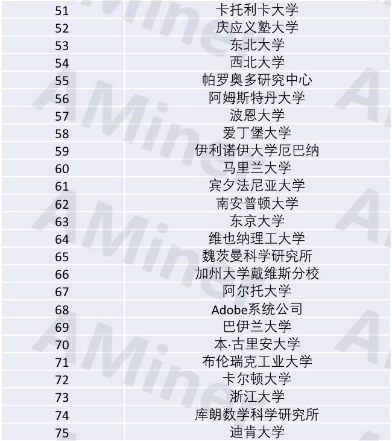

资料参考
1 外部参考
1.1 外部内容源
- 用好百度、谷歌搜索
- 组织和公司官网：
- 科技巨头和独角兽的官网：产品、方案、白皮书、发布的报告、服务支持、社区等
- 标准化组织：ISO/IEC，ITU、IETF、W3C、3GPP、IEEE、国家标准委（GB-T，GB-R等等）、工信部、发改委等，行业标准组织
- 咨询公司：中国信通院CAICT、Gartner公司，IDC咨询，ForresterResearch，埃森哲，麦肯锡，亿欧网，艾瑞，易观等
- 一手+高质+深度的科技信息源：
- HackerNews：https://news.ycombinator.com/news
- 硅谷技术圈和投资圈都会关注的新闻网站，资讯不仅和AI有关，还会涉及到创业和信息安全。
- DataTau：datatau.com：
- 专门给数据科学家看的HackerNews。
- AITopics：
- 3Blue1Brown：
- Two Minute Papers：
- Robert Miles：
- Siraj Raval：
- 著名公司博客
- Google：
- Facebook：
- Nvidia：
- Apple：
- Microsoft：
- 百度
- Google Scholar
- ResearchGate
- Distill
- Medium：
- HackerNews：https://news.ycombinator.com/news
- 科技报道网站：
- 开源网站：
- 协同办公参考网站：https://www.uctoday.com/
- AI强相关
- Reddit和Quora帖子、问答和讨论
- machine_learning：https://www.reddit.com/user/techrat_reddit/m/machine_learning/
- MachineLearning：https://www.reddit.com/r/MachineLearning/
- computervision：https://www.reddit.com/r/computervision/
- learnmachinelearning：https://www.reddit.com/r/learnmachinelearning/
- Machine Learning：https://www.quora.com/pinned/Machine-Learning
- Computer Vision：https://www.quora.com/pinned/Computer-Vision
- Deep Learning：https://www.quora.com/pinned/Deep-Learning：
- Reinforcement Learning：https://www.quora.com/pinned/Reinforcement-Learning
- Reddit和Quora帖子、问答和讨论
- 论文阅读：
- Arxiv：
- 论文主动推送功能：arxiv-sanity.com
- Computer Vision and Pattern Recognition：https://arxiv.org/list/cs.CV/recent
- Artificial Intelligence：https://arxiv.org/list/cs.AI/recent
- Learning：https://arxiv.org/list/cs.LG/recent
- Neural and Evolutionary Computing：https://arxiv.org/list/cs.NE/recent
- 论文的同行、大牛点评和笔记：http://shortscience.org/
- 适合新手和看导读的
- Paper和code整合的网站：GitXiv.com
- 提供一站式服务
- 计算机视觉最新论文：
- 顶级论文合集：https://github.com//RedditSota/state-of-the-art-result-for-machine-learning-problem
- 持续更新，RedditSota 统计了各种机器学习任务的最顶级研究成果
- 论文无法复现「真公开处刑」，PapersWithCode上线「论文复现报告」。https://mp.weixin.qq.com/s/iU-uoimkwxFZzKqTze9Vdg
- 论文列表地址：https://openreview.net/group?id=ML_Reproducibility_Challenge/2020
- PapersWithCode 复现报告地址：https://paperswithcode.com/conference/rc-2020
- ReScience 复现报告地址：http://rescience.github.io/read/#volume-7-2021
- IEEE网站，谷歌scholar搜索，百度学术搜索，国内的CNKI、万芳等。
- Arxiv：
1.2 外部公众号
- Twitter：
- 关注Deep Learning Hub；Marshall Kirkpatrick；Lynn Cherny；Top-N；Top 10 AI；Text Data, Vis & Art
- 个人博客：
- The Wild Week in AI：https://www.getrevue.co/profile/wildml
- 周更，上面时不时还会有初创团队招人信息放出来。
- inFERENCe：inference.vc
- 不定期更，个人的一个学习机器学习的成长记录。
- The Morning Paper：https://blog.acolyer.org/
- 日更，多从投资者的角度出发。
- Inside AI：https://inside.com/ai
- Inside网站旗下的AI话题板块，专注于资讯的深度。
- The Wild Week in AI：https://www.getrevue.co/profile/wildml
- 国内关注微博、微信、百度app、各大资讯客户端的上的内容号及相应的网站：
- 知名公众号：
- InfoQ，云头条，CNCF，架构艺术，AI科技评论，机器之心，量子位，新智元，智东西，DeepTech深科技，爱可可-爱生活，36kr，钛媒体，TechWeb，雷锋网，浅黑科技，甲子光年，机器人大讲堂，iFeng科技，视频云技术，智媒之音，21世纪商业评论，5G通信，5G通信技术，SegmentFault，智能车参考。
- 企业相关：
- 企业管理杂志，知识管理论坛，CIO之家，首席数字官，数字化企业，创业家
- 生活相关：
- 环球科学，每日小读十分钟，图图是道，Visa看天下
- 国家大事：
- 参考消息，长安街知事，环球时报，南方都市报，人民日报，新华社，央视新闻，中国经济网，中国新闻周刊
- 大厂和知名公司：
- 腾讯，腾讯技术工程，腾讯大讲堂，腾讯研究院，企鹅智库，企业微信，腾讯会议
- 阿里技术，支付宝技术，阿里巴巴文娱技术，阿里研究院，阿里开发者，阿里云云栖号，钉钉
- 百度，百度AI，百度开发者中心，Apollo智能驾驶，爱奇艺技术产品团队
- 谷歌黑板报，谷歌开发者
- 微软科技，微软研究院AI头条
- 亚马逊云科技
- 华为，华为welink
- 字节跳动，字节跳动技术团队，飞书
- 哔哩哔哩
- 金山云
- 快手
- 网易传媒技术团队
- 声网Agora，声网Agora开发者
- YY直播组
- LiveVideoStack
- 特斯拉Tesla
- 思科科技
- 投资公司和投资
- 红杉汇、IDG资本、IT桔子、雪球、少数派投资
- 咨询、机构：
- 中国信通院CAICT、Gartner公司，IDC咨询，ForresterResearch，埃森哲，麦肯锡，亿欧网，艾瑞，易观等，音视频国检中心
- 知名公众号：
2 牛人、机构和重要会议
2.1 牛人
- 2021年9月，那些用推荐引擎改变世界的人。https://mp.weixin.qq.com/s/jBXH8PIeFGzKaHVoG9KXDw
- 致敬中国的技术创业者们，致敬阿北、王守崑、谷文栋、项亮、张栋、宿华、张一鸣、杨震原等等一代代技术创新者。
- 2021年7月，IEEE技术领域大奖公布：ML先驱上榜，大陆唯一获奖学者来自清华。https://mp.weixin.qq.com/s/qbpk3cjPj9o7sFyIHdwCsA
- 2021年4月，2021年人工智能全球最具影响力学者榜单AI 2000发布。https://mp.weixin.qq.com/s/OP1HAVFYzLKTZvYRdXZjqg
- 2021年1月，ACM Fellow 名单重磅发布！12 位华人学者入选。https://mp.weixin.qq.com/s/0yKYiWrh8xXss3n1NBofPg
- 2020年12月，谷歌传奇Jeff Dean获2021年IEEE冯诺依曼奖，8页本科论文被大学图书馆保存至今。https://mp.weixin.qq.com/s/Z9h7sdlG-8MeJhQa7psr_A
- 2020年11月，IEEE Fellow、AAAS Fellow 同日公布，清华唐杰、京东郑宇等数十位华人入选。https://mp.weixin.qq.com/s/m2MD03D5rgxnTVUFgwRcUA
- 2020年6月，2020软科世界一流学科排名出炉！清华13个学科位居世界前十，计算机排全球第7。https://mp.weixin.qq.com/s/PH8ud2TfgzA3bxr97ThQdA
1.
- 2020年5月，2020全球顶尖计算机科学家排名发布：两位华人学者入全球前10，Top 1000华人学者过百。https://mp.weixin.qq.com/s/A06jVw3D_g8AWN-AKcB4nA
- 榜单前 100 中的华人学者共计 14 名：
- 韩家炜（Jiawei Han）：伊利诺伊大学香槟分校计算机系教授
- 俞士纶（Philip S. Yu）：伊利诺伊大学芝加哥分校信息技术教授
- 黄煦涛（Thomas S. Huang）：华人计算机视觉鼻祖、双院外籍院士，已于上个月逝世
- 陈关荣（Guanrong Chen）：香港城市大学讲座教授以及北京大学长江讲座教授
- 张宏江（HongJiang Zhang）：源码资本投资合伙人
- 吴恩达（Andrew Ng）：斯坦福大学客座教授以及教育平台 Coursera 创建者
- 王子栋（Zidong Wang)：布鲁奈尔大学信息计算与数学院教授
- 张世富（Shih-Fu Chang）：哥伦比亚大学工程与应用科学学院副院长
- 汤晓鸥（Xiaoou Tang）：香港中文大学信息工程系教授以及商汤科技创始人
- 陶大程（Dacheng Tao）：澳洲科学院院士，优必选科技有限公司 AI 首席科学家
- David Zhang：香港中文大学
- 沈学民（Xuemin Shen）：加拿大滑铁卢大学
- 马维英（Wei-Ying Ma)：字节跳动副总裁
- 宋晓东：（Dawn Song）加州大学伯克利分校
- 2020年6月，《麻省理工科技评论》2020年度全球科技创新英雄榜发布，5位华人上榜。https://mp.weixin.qq.com/s/Y1rXBCKg8Q7hNk2zrkj_Sw
- 2020年5月，2019中国计算机高引学者榜单出炉，164人入选，周志华位列第二。https://mp.weixin.qq.com/s/Ww8WMGO0rgA7_pCdApmHfg
- 2020年3月，最新图灵奖颁布！两位皮克斯“前员工”获奖，引领计算机技术和电影“联姻”。https://mp.weixin.qq.com/s/riF9e5G79iTsnQMIpsaqxA
- 国际计算机协会（Association for Computing Machinery，ACM）宣布，Patrick M. Hanrahan 和 Edwin E. Catmull 为 2019 年 ACM A.M. 图灵奖获得者，以表彰他们对 3D 计算机图形学的贡献，以及这些技术对电影制作和计算机生成图像（computer-generated imagery，CGI）等应用的革命性影响。
- 2020年2月，2020 年斯隆研究奖公布，16位华人科学家入选，4名来自北大数院。https://mp.weixin.qq.com/s?__biz=MzA5ODEzMjIyMA==&mid=2247495712&idx=1&sn=2806c6effe248daeda8d8ba50a0cc394&source=41#wechat_redirect
- 2020年1月，谁是杨强？首位AAAI华人主席，身兼5大顶级组织Fellow，也是华为诺亚方舟实验室开创者。https://mp.weixin.qq.com/s/ejiYXb9vm2VJGZqJ4jgqcg
- 2020年1月，Hinton、何恺明等领跑！全球最具影响力2000名AI学者榜单：美国上榜1128人次，中国171人次。https://mp.weixin.qq.com/s/y440nacScmtRtidIXFeerw
- 2020年1月，北大30岁女博导获2019 IEEE青年成就奖，全球仅三人，深耕微纳电子、神经形态计算。https://mp.weixin.qq.com/s/eK9otDTdNdt5IOWP5X4hbA
- 2019年12月，AAAI最新公布12名资深会员：3位华人教授入选，论文引用近2万次！https://mp.weixin.qq.com/s/0RBDRvaItg-ASeXVW5WnGQ
- 2019年11月，2019 AAAS Fellow增选名单正式揭晓，谢涛、谢源兄弟双双入选。https://mp.weixin.qq.com/s/gyL3ao2MTGJxHdHfamYa3w
- 2019年11月，2020年IEEE Fellow刚刚揭榜！超70名华人入选，周伯文、叶杰平、陈宝权、熊辉等上榜！https://mp.weixin.qq.com/s/m3klLdqtqhVSYCSnAyJJtw
- 2019年11月，2019全球高引学者榜单出炉：中国735人次入选增速第一，计算机学科蝉联第一，中科院首次入围全球前三。https://mp.weixin.qq.com/s/KYsd3ffYO-g71hd7Lahy_w
1.
- 2019年2月，人工智能 21 个子领域高被引学者Top 3，https://mp.weixin.qq.com/s/y61AHYw8Sr6yxunuWWOS6g
- 各方向全球top 10人 ：机器学习.JPG，数据挖掘.JPG，自然语言处理.JPG，计算机视觉.JPG，人工智能.JPG，网络信息检索.JPG，计算机图形.JPG
- 机器视觉方向全球top100人：计算机视觉top100.JPG，计算机视觉top100_2.png
- 图灵奖得主：2019年3月，ACM 宣布2018 年图灵奖获得者是号称深度学习三巨头的 Yoshua Bengio, Yann LeCun 和 Geoffrey Hinton，得奖理由是：他们在概念和工程上取得的巨大突破，使得深度神经网络成为计算的关键元素（For conceptual and engineering breakthroughs that have made deep neural networks a critical component of computing.）。
- Aminer：
- 清华大学科技知识挖掘平台AMiner统计的近10年人工智能21个子领域被引用数量最高的学者
- 全部名单见：https://www.aminer.cn/mostinfluentialscholar
- 21个子领域高被引学者Top 3：https://mp.weixin.qq.com/s/y61AHYw8Sr6yxunuWWOS6g
- 清华大学知识挖掘平台AMiner统计的AI领域最有影响力的学者：AI-10 Most Influential Scholars：https://www.aminer.cn/ai10
- 清华大学科技知识挖掘平台AMiner统计的近10年人工智能21个子领域被引用数量最高的学者
- 2019年11月，从百度、微软出走的AI大牛都去哪了？世界华人AI精英流向图的背后……https://mp.weixin.qq.com/s/3HBHhFeaLnUd8cF3VBBu4A
1.
- 2018华人AI学术影响力Top100：http://tech.163.com/18/0907/10/DR3I2G0I00098IEO.html
- 综合了过去5年的学术表现，在全球范围内评选出一百位45周岁以下的华人AI学者。整体上，结果综合了全球权威大数据Google Scholar、AMiner学术指标，加权推导出学术指数（Scholar Index）。具体方法上，根据清华科技大数据中心的建议，采用100%的定量数据对学术指标进行评估，通过清华科技大数据中心AMiner团队的人工智能知识图谱筛选排行，综合筛选条件整理的数据结果。
- Guide2Research网站日前发布了2018年全球计算机科学和电子领域H-index排名前1000的科学家。中国29名上榜，大陆排名前10的科学家是：张宏江，源码资本（29）；马维英，今日头条（86）；高会军，哈尔滨工业大学（94）；周志华，南京大学（202）；高文，北京大学（228）；谭铁牛，中国科学院自动化研究所（260）；张亚勤，百度（353）；焦李成，西安电子科技大学（497）；王飞跃，中国科学院（556）；刘云浩，清华大学（750）。https://mp.weixin.qq.com/s/vlVFAk2_iiCEvMG33PLBtA
- 35岁以下：
- 2021年10月，亚太地区“35岁以下科技创新35人”重磅出炉！20位中国青年学者崭露头角。https://mp.weixin.qq.com/s/0JY8fT3-mVZwbIXMoXHoKw
- 2021年10月，2021年度全球“35岁以下科技创新35人”正式发布。https://mp.weixin.qq.com/s/pcytbDIzrEJ3T9s69afMZg
- 2020年1月，邓磊：“0学姐学长”的7年，国内首个类脑计算博士造出一颗登上Nature的芯片。https://mp.weixin.qq.com/s/Gw8qlSjeoJxu3ioK50nOAA
- 2019年12月，《麻省理工科技评论》年度中国科技青年英雄榜发布！35位入选者涵盖全球最前沿科学与技术。https://mp.weixin.qq.com/s/yWQWhlqCqgyps4KXVm7mKw
- 2018年6月《麻省理工科技评论》公布了第 18 届 35 Innovators Under 35 评选结果，即 2018 年度 全球 “35 岁以下科技创新 35 人”榜单。https://mp.weixin.qq.com/s/5J2wKA98GYo9OE99gj4TGQ
2.2 机构、期刊
- 2020年7月，全球自然指数揭晓：中科院总榜夺冠，中科大领先北大、清华，位列全球第8。https://mp.weixin.qq.com/s/J9-5tz8Qn2KwByF8eFopgg
- https://www.natureindex.com/institution-outputs/generate/All/countries-China/All/score
- 2019年6月，nature指数发榜：中科院总榜夺冠，北大、清华列学术机构Top 10。https://mp.weixin.qq.com/s/fVCL3CJEYbdH8Fr-iunncw
- 2019年1月，CSRankings进行了年度更新，清华在整体排名中位居第十，CMU第一；在AI专业的细分小项中，清华、北大力压CMU，位列第一、第二，前十名的高校中，有六所在中国。并且给出了诸如视觉、nlp这些细分类的方向排名，可以参考。CSRanking的所有代码和数据均可通过链接公开获取：https://github.com/emeryberger/CSRankings，参考：https://mp.weixin.qq.com/s/cVkq6zpE6-gKGd2wNT2bLA
- 2020年7月，2020谷歌学术指标出炉，CVPR成AI学术会议总榜第一名。https://mp.weixin.qq.com/s/ULfMvPc2-ri5SdCDwvamMw
- 2018谷歌学术期刊&出版物排名公布。在哪学期刊/会议上发表论文才算牛，一目了然。https://mp.weixin.qq.com/s/fUnn6xQI0bLXQkqacdtdPg
- Nature第一、Science第三，但值得关注的是，计算机视觉顶会CVPR排名第20，另一个AI领域的顶会NIPS也排名第54，名次较去年有了大幅提升。
- 排名第一的Nature里，过去5年被引用次数最高的论文，也是“深度学习三大神”Hinton、LeCun和Bengio合著的《深度学习》一文。不仅如此，在CVPR里，过去5年被引次数最多的论文，是当时还在微软亚洲研究院的孙剑、何恺明、张祥雨、任少卿写的的ResNet，被引次数已经过万。
- Aminer
- AI 领域全球最具影响力机构 TOP100。
- 清华大学的AMiner 团队以 ACM 计算分类系统（CCS2012）为基础，并根据前期采样的中国人智能领域的专家数据，将人工智能细分为如下 21 个子领域。再获取 21 个子领域对应核心期刊和会议最近 10 年的论文，并从中挖掘出每个领域全球最具影响力的学者各 100 名左右，进而分析出top 100的机构
1.
- 清华大学的AMiner 团队以 ACM 计算分类系统（CCS2012）为基础，并根据前期采样的中国人智能领域的专家数据，将人工智能细分为如下 21 个子领域。再获取 21 个子领域对应核心期刊和会议最近 10 年的论文，并从中挖掘出每个领域全球最具影响力的学者各 100 名左右，进而分析出top 100的机构
- AI 领域全球最具影响力机构 TOP100。

- 2019年9月，清华最新计算机推荐学术会议和期刊列表，和CCF到底差异在哪儿？https://mp.weixin.qq.com/s/7YSP-22VMcc7P2j5IheGBQ
2.3 重要会议
- 2017年的10大AI顶会：https://mp.weixin.qq.com/s/awHpnyQopspdh_uqcDfqFQ
| ICCV: IEEE International Conference on Computer Vision | 领域顶级国际会议，录取率20%左右，2年一次，中国大陆每年论文数不超过10篇 | 计算机视觉，模式识别，多媒体计算 |
|---|---|---|
| CVPR: IEEE Conf on Comp Vision and Pattern Recognition | 领域顶级国际会议，录取率25%左右，每年一次，中国大陆每年论文数不超过20篇 | 模式识别，计算机视觉，多媒体计算 |
| ECCV: European Conference on Computer Vision | 领域顶级国际会议，录取率25%左右，2年一次，中国大陆每年论文数不超过20篇 | 模式识别，计算机视觉，多媒体计算 |
| ICLR：International Conference on Learning Representations | 虽然建立的时间不长，但是质量非常高。2013 年才刚刚成立了第一届，但已经被学术研究者们广泛认可，被认为「深度学习的顶级会议」。由位列深度学习三大巨头之二的 Yoshua Bengio 和 Yann LeCun 牵头创办。ICLR 虽然并不一定是第一个采用 Open Review 进行论文评审的机构，但一定是做得最公开、影响范围最大的一个会议。众所周知，数据的应用表征对于机器学习的性能有着重要影响。表征学习的迅猛发展也伴随着不少问题，比如我们如何更好地从数据中学习更具含义及有效的表征。我们对这个领域展开了探索，包括了深度学习、表征学习、度量学习、核学习、组合模型、非常线性结构预测及非凸优化等问题。尽管表征学习对于机器学习及包括视觉、语音、音频及 NLP 领域起着至关重要的作用，目前还缺乏一个场所，能够让学者们交流分享该领域所关心的话题。ICLR 的宗旨正是填补这一鸿沟。 | 深度学习、表征学习、度量学习、核学习、组合模型、非常线性结构预测及非凸优化等问题 |
| ICML: International Conference on Machine Learning | 领域顶级国际会议，录取率25%左右，2年一次，目前完全国内论文很少 | 机器学习，模式识别 |
| NIPS: Neural Information Processing Systems | 领域顶级国际会议，录取率20%左右，每年一次，目前完全国内论文极少（不超过5篇） | 神经计算，机器学习 |
| IEEE VR:IEEE Virtual Reality | IEEE虚拟现实会议，每年一次 | 虚拟现实领域 |
| ACM VRST:ACM Virtual Reality Software and Technology | 虚拟现实软件与技术ACM年会，一年一次 | 虚拟现实领域 |
| ACL: The Association for Computational Linguistics | 国际计算语言学会年会，是本领域最权威的国际学术会议之一，每年举办一次，计算语言学/自然语言处理方面最好的会议, ACL (Association of Computational Linguistics) 主办, | 计算语言学，自然语言处理 |
| COLING: International Conference on Computational Linguistics | 计算语言学会议，也是本领域最权威的国际学术会议之一，两年一次 | 计算语言学，自然语言处理 |
| IJCAI: International Joint Conference on Artificial Intelligence | 人工智能领域顶级国际会议，论文接受率18％左右 | 人工智能 |
| AAAI: American Association for Artificial Intelligence | 美国人工智能学会AAAI的年会，使该领域的顶级会议 | 人工智能 |
| PRICAI: Pacific Rim International Conference on Artificial Intelligence | 亚太人工智能国际会议 | 人工智能 |
| SIGKDD | 数据挖掘方面最好的会议, ACM 主办, 每年开。录取率18％左右，会有推荐相关研究内容。 | 推荐系统 |
| SIGIR | 信息检索方面最好的会议，与检索、推荐、挖掘等都有关，ACM 主办, 每年开。录取率19％左右，会有推荐相关研究内容。ACM SIGIR是国际计算机学会主办的信息检索领域的最重要学术会议，中国计算机学会推荐国际学术会议 中的A类 | 推荐系统 |
| RecSys | 不是A类会议，ACM主办的推荐系统旗舰会议，其征文范畴包含推荐系统的各个领域，包括算法设计、系统实现、理论推导和评估测试等。RecSys是推荐系统领域最好的专门会议。 | 推荐系统 |
| SysML | Jeff Dean、李飞飞等发起，底层系统、平台和机器学习结合。会议地址：http://www.sysml.cc/ | 机器学习、基础系统、资源、平台 |